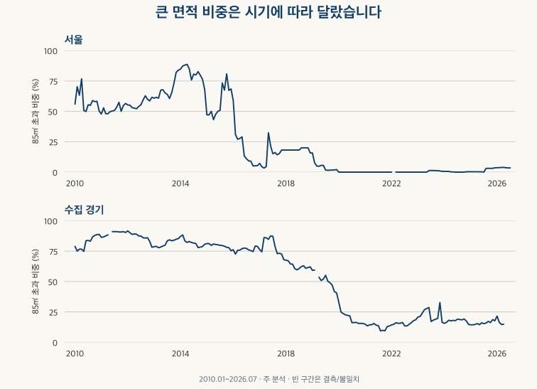
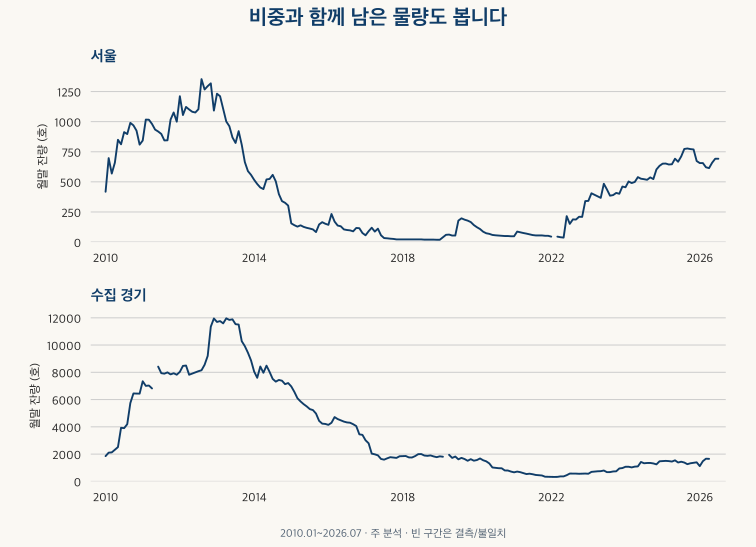
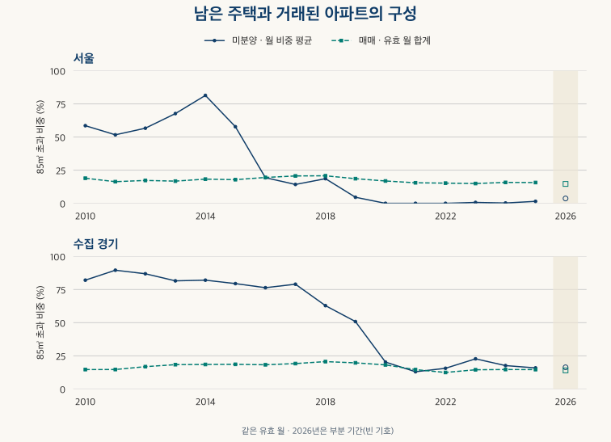

공급과 미분양 · 큰 면적의 잔량
준공 후 미분양 면적별 비중: 큰 평형에 몰렸을까?
서울·수집 경기의 2010~2026년 7월 준공 후 미분양을 세 면적 구간으로 비교합니다. 대형 비중의 고점과 반례, 같은 기간 매매 구성, 공식 원표의 빈칸과 결측 민감도를 확인하세요.
분석 기간 · 2010.1~2026.7 · 2026은 부분 기간 | 자료 기준일 · 2026-10-03
집이 다 지어졌는데도 팔리지 않았다면 큰 평형이 많이 남았을까요? 대형 비중이 높았던 시기는 있지만, 늘 그랬던 것은 아닙니다. 수집 경기 지역에서 전용 85㎡ 초과가 차지한 월별 비중의 연평균은 2011년 89.6%에서 2021년 13.0%로 달라졌습니다. 같은 두 해의 아파트 매매에서 큰 면적이 차지한 비중은 각각 14.7%, 14.6%였습니다. 남은 주택의 구성과 거래된 아파트의 구성은 서로 다른 이야기를 합니다.
준공 후 미분양은 어떤 주택을 세나요?
사용검사 뒤에도 분양되지 않은 주택의 잔량을 뜻합니다. 기사에서 쓰는 ‘악성’은 이 상황을 강조하는 표현이며, 개별 주택의 하자나 회수 불가능성을 판정한 공식 분류로 읽지 않습니다. 국토교통부 미분양주택현황보고의 조사 대상은 사업계획승인·건축허가를 받은 민간 주택입니다. 이 글은 그중 준공 후 항목을 사용하며 공공 주택이나 준공 전 물량을 섞지 않았습니다.
면적은 전용 60㎡ 이하, 60㎡ 초과~85㎡ 이하, 85㎡ 초과로 나눕니다. 정확히 60㎡는 첫 구간, 85㎡는 두 번째 구간입니다. 통상적인 59형·84형이나 공급면적 평수와는 다릅니다. 여기서 ‘큰 면적’은 설명을 위한 85㎡ 초과 구간의 이름입니다.
미분양은 아파트 외 주택도 포함하는 민간 주택 통계입니다. 비교하는 매매는 아파트 계약이므로 같은 집들이 팔리고 남은 결과를 추적한 자료가 아닙니다. 월말 잔량을 12개월 더해 ‘그해 미분양된 집 수’라고 부르거나, 미분양 잔량을 매매 건수로 나눠 판매 확률을 계산하지 않습니다.
서울은 25개 구 전체입니다. 경기는 수집한 36개 시·구의 공간만 포함하며 경기도 전체가 아닙니다. 미분양의 일부 구 요청은 상위 시의 값이 반복되므로, 중복을 없애 20개 시를 한 번씩 셌습니다. 매매는 원래 수집한 36개 지역의 합을 유지했습니다. 현재 지역 코드에 연결된 과거 이력이므로, 16년 동안 물리적 행정 경계가 완전히 같았다고 단정하지 않습니다.
보고 과정과 공공·민간 열, 출처별 미기재를 먼저 확인하려면 미분양 통계의 포함 범위를 참고하세요.
큰 면적 비중은 언제 높고 언제 낮았나요?
월별 주 분석에서 서울의 최고는 2014년 4월 88.6%입니다. 전체 440호 중 390호가 85㎡ 초과였습니다. 수집 경기의 최고는 2012년 1월 91.7%로 전체 8,035호 중 7,366호입니다. 비중만 비슷하다고 남은 물량의 규모도 비슷한 것은 아닙니다.

반대 시기도 있습니다. 수집 경기는 2021년 8월 큰 면적이 44호로, 전체 470호의 9.4%였습니다. 서울은 2020~2022년의 유효 월에서 큰 면적 잔량이 0호였습니다. 다만 서울 2022년 2월은 보유 KB 값이 결측이므로 ‘0을 관측한 달’로 넣지 않았습니다.
| 범위 | 비교 | >85㎡ 비중 | 관측 월 |
|---|---|---|---|
| 서울 | 모든 유효 월 · 최고 | 88.6% | 2014.04 |
| 서울 | 모든 유효 월 · 최저 | 0.0% | 2020-01~2025-07 중 46개월² |
| 서울 | 연말만 · 최고 | 83.9% | 2013.12 |
| 서울 | 연말만 · 최저 | 0.0% | 2020.12 · 2021.12 · 2022.12 |
| 수집 경기 | 모든 유효 월 · 최고 | 91.7% | 2012.01 |
| 수집 경기 | 모든 유효 월 · 최저 | 9.4% | 2021.08 |
| 수집 경기 | 연말만 · 최고 | 90.3% | 2011.12 |
| 수집 경기 | 연말만 · 최저 | 13.5% | 2021.12 |
월별 극값과 연말 극값은 다른 비교입니다. 서울은 월별 최고가 2014년 4월이지만 연말만 보면 2013년 12월 83.9%가 가장 높습니다. 표의 ²는 최저값이 여러 달에 걸쳐 같은 경우입니다. 동률인 월 전체와 월별 수량은 글 끝의 공개 집계에 보존했습니다.

월말 잔량이 줄었다고 같은 집들이 그만큼 팔렸다고 알 수는 없습니다. 사업장의 상태 변경과 새 유입도 있을 수 있습니다. 비중을 읽을 때 전체 잔량과 큰 면적의 실제 수량을 함께 봐야 하는 이유입니다.
같은 시기의 아파트 매매도 대형 위주였나요?
먼저 비교할 달을 맞췄습니다. 해당 연도에서 미분양 구성이 유효한 달만 골라, 같은 달에 체결된 정제 매매의 면적별 건수를 합했습니다. 기본 집계는 유효한 양의 가격·면적을 갖는 계약을 사용하고 토지임대부를 제외하며, 확인된 해제·직거래는 포함합니다. 이를 추가로 제외한 ‘제외 집계’는 아래 민감도와 공개 집계에서 따로 볼 수 있습니다.
서울은 2014년 큰 면적의 미분양 월평균 비중이 81.4%, 같은 해 매매 비중은 18.3%였습니다. 수집 경기는 2011년 89.6%와 14.7%였지만, 2021년에는 13.0%와 14.6%로 관계가 달라집니다. ‘큰 면적은 늘 거래보다 미분양에 더 많이 나타난다’는 설명은 이 비교 전체에 맞지 않습니다.

| 연도 | 유효 월 | 미분양 >85㎡ | 매매 >85㎡ | 전체 미분양 월평균 |
|---|---|---|---|---|
| 2010 | 12 | 58.6% | 18.9% | 792호 |
| 2011 | 12 | 51.7% | 16.3% | 949호 |
| 2012 | 12 | 56.7% | 17.3% | 1,173호 |
| 2013 | 12 | 67.7% | 16.7% | 895호 |
| 2014 | 12 | 81.4% | 18.3% | 447호 |
| 2015 | 12 | 57.8% | 17.8% | 131호 |
| 2016 | 12 | 19.3% | 19.5% | 126호 |
| 2017 | 12 | 14.2% | 20.7% | 57호 |
| 2018 | 12 | 18.6% | 20.8% | 21호 |
| 2019 | 12 | 4.6% | 18.6% | 111호 |
| 2020 | 12 | 0.0% | 16.8% | 69호 |
| 2021 | 12 | 0.0% | 15.5% | 63호 |
| 2022 | 11 | 0.0% | 15.2% | 152호 |
| 2023 | 12 | 0.7% | 14.9% | 404호 |
| 2024 | 12 | 0.2% | 15.8% | 529호 |
| 2025 | 12 | 1.5% | 15.7% | 702호 |
| 2026¹ | 7 | 3.7% | 14.6% | 656호 |
| 연도 | 유효 월 | 미분양 >85㎡ | 매매 >85㎡ | 전체 미분양 월평균 |
|---|---|---|---|---|
| 2010 | 12 | 82.1% | 14.6% | 4,002호 |
| 2011 | 11 | 89.6% | 14.7% | 7,642호 |
| 2012 | 12 | 86.9% | 16.8% | 8,836호 |
| 2013 | 12 | 81.5% | 18.3% | 11,025호 |
| 2014 | 12 | 82.1% | 18.5% | 7,715호 |
| 2015 | 12 | 79.5% | 18.6% | 5,421호 |
| 2016 | 12 | 76.4% | 18.2% | 4,194호 |
| 2017 | 12 | 79.0% | 19.1% | 1,979호 |
| 2018 | 12 | 62.8% | 20.6% | 1,862호 |
| 2019 | 11 | 50.8% | 19.7% | 1,706호 |
| 2020 | 12 | 20.3% | 18.2% | 1,152호 |
| 2021 | 12 | 13.0% | 14.6% | 525호 |
| 2022 | 12 | 15.6% | 12.4% | 464호 |
| 2023 | 12 | 22.7% | 14.5% | 750호 |
| 2024 | 12 | 17.6% | 14.7% | 1,236호 |
| 2025 | 12 | 15.9% | 14.6% | 1,419호 |
| 2026¹ | 5 | 16.3% | 14.0% | 1,507호 |
¹ 2026년은 1~7월 중 유효 월입니다. 서울은 7개월, 수집 경기는 5개월이며 5·6월이 빠집니다. 미분양 월평균 수량은 호 단위로 반올림했습니다. 세 면적의 구성 전체와 연말 수량은 아래 자료 설명에서 펼쳐 볼 수 있습니다.
이 차이가 대형 선호의 변화일까요? 그렇게 설명하려면 최초 공급의 면적 구성과 분양가·입지·사업 시기부터 알아야 합니다. 예전에 공급된 대형 잔량이 오래 남았을 수도 있고, 새 소형 사업장이 잔량에 들어오면서 비중이 바뀔 수도 있습니다. 매매에는 기존 아파트 거래도 포함됩니다. 면적별 가격 흐름은 소형·중형·대형 가격지수 비교라는 별도 질문으로 확인해야 합니다.
공식 원표의 빈칸과 비교 월을 바꾸면 결론도 달라지나요?
달라지는 부분이 있습니다. 주 분석은 보유 KB의 완전한 수량을 사용하되, 면적 합이 맞지 않거나 공식 원표의 숫자와 광역 합이 맞지 않는 달을 제외합니다. 공식 원표에 빈칸이나 대시, 해당 시 행의 부재가 있더라도 KB에 기록된 0을 그대로 유지한 경우가 있습니다. 이를 공식적으로 확인된 0과 같다고 가정하지 않고, 원표의 모든 구성값이 명시된 달만 남기는 보조 비교를 했습니다.
이 조건에서 수집 경기의 유효 월은 195개월에서 163개월로 줄고, 2010·2011년에는 비교 가능한 달이 없습니다. 큰 면적의 월평균 비중은 53.6%에서 47.1%로 달라집니다. 월별 최고도 2012년 1월 91.7%에서 2014년 2월 88.4%로 바뀝니다. 따라서 ‘전체 기간 평균도 대형이 절반 이상이었다’는 결론은 빈칸 처리에 견고하지 않습니다.
| 범위·조건 | 유효 월 | 미분양 월평균 비중 | 미분양 잔량 가중 비중 | 기본 집계 매매 비중 | 제외 집계 매매 비중 |
|---|---|---|---|---|---|
| 서울 · 주 분석 | 198 | 26.4% | 38.9% | 17.8% | 17.8% |
| 서울 · 공식 명시값만 | 198 | 26.4% | 38.9% | 17.8% | 17.8% |
| 서울 · 2024.08 제외 | 197 | 26.5% | 39.2% | 17.8% | 17.8% |
| 서울 · 2026.06까지 | 197 | 26.5% | 39.2% | 17.8% | 17.8% |
| 수집 경기 · 주 분석 | 195 | 53.6% | 74.8% | 17.2% | 17.2% |
| 수집 경기 · 공식 명시값만 | 163 | 47.1% | 69.6% | 17.5% | 17.5% |
| 수집 경기 · 2024.08 제외 | 194 | 53.8% | 75.0% | 17.2% | 17.2% |
| 수집 경기 · 2026.06까지 | 194 | 53.8% | 75.0% | 17.2% | 17.2% |
‘잔량 가중 비중’은 잔량이 많은 달에 더 큰 가중치를 준 구성비입니다. 같은 주택이 여러 월에 반복될 수 있으므로 기간 누적 미분양 물량의 구성이라고 부르지 않습니다. 이 값과 월별 비중 단순 평균이 다른 이유는 한 거래·한 세대·한 평의 가중치 차이와 같은 분모 문제입니다.
2024년 8월에는 경기 세 도시의 값 배치가 공식 원표와 다르지만 이 글의 합계 안에서는 상쇄됐습니다. 주 분석에는 포함하고, 이 달도 제외한 결과를 따로 냈습니다. 공식 원표의 다른 숫자를 가져와 보유 KB의 특정 달만 고치는 방식은 쓰지 않았습니다.
| 범위 | 월 | 제외 이유 |
|---|---|---|
| 서울 | 2022-02 | KB 구성값 결측 |
| 수집 경기 | 2011-05 | KB 구성값 결측 |
| 수집 경기 | 2019-03 | KB 면적 합 불일치 · 공식 숫자 대조 불일치 |
| 수집 경기 | 2026-05 | KB 구성값 결측 |
| 수집 경기 | 2026-06 | KB 구성값 결측 |
위 표는 ‘미분양이 없었다’는 월 목록이 아닙니다. 특히 서울 2022년 2월은 공식 값이 있어도 보유 KB의 빈칸을 채우지 않았고, 경기 2026년 5·6월은 화성 값이 빠져 합계를 사용할 수 없습니다. 공식 명시값만 쓰는 조건에서 추가로 제외되는 달과 네 조건의 연간 수치는 공개 집계에서 확인할 수 있습니다.
2026년의 작은 대형 비중을 연간 결론으로 읽어도 되나요?
아직 완결 연도와 같은 조건이 아닙니다. 마지막 관측 월인 2026년 7월에는 서울 전체 692호 중 큰 면적이 24호(3.5%), 수집 경기 전체 1,624호 중 229호(14.1%)였습니다. 이는 그달 말의 잔량 구성입니다.
| 범위 | 전체 | ≤60㎡ | 60~85㎡ | >85㎡ | >85㎡ 비중 |
|---|---|---|---|---|---|
| 서울 | 692 | 589 | 79 | 24 | 3.5% |
| 수집 경기 | 1,624 | 629 | 766 | 229 | 14.1% |
2026년 연도 평균은 서울 7개월과 경기 5개월에 한정됩니다. 매매도 같은 달만 포함했으며, 보유 9월 말 자료에서 7월 거래는 최근 신고 지연에 주의할 잠정 구간입니다. 위 보조 표에는 6월까지만 비교한 결과도 남겼습니다. 값이 없는 8~12월을 0으로 넣거나 연말 수량을 예측하지 않았습니다.
자료 확인일인 2026년 10월 12일의 공식 통계 목록에는 8월말 원표도 있습니다. 이 글의 끝월은 보유 KB 계열과 매매 비교에 맞춘 7월입니다. 최신 월의 미분양 현황은 공식 월말 원표에서 별도로 확인하세요.
미분양 기사를 읽을 때 무엇부터 확인할까요?
- 대상을 확인합니다. 전체 미분양인지 준공 후인지, 민간인지 전체인지, 아파트만인지 주택 전체인지 표 제목과 주석을 봅니다.
- 비중과 호수를 같이 봅니다. 큰 면적 비중이 높아졌어도 큰 면적의 호수가 늘었다고 바로 알 수는 없습니다. 다른 면적의 잔량이 더 빠르게 줄었을 수 있습니다.
- 달과 지역 범위를 맞춥니다. 같은 ‘경기’라도 전체 도와 수집 지역의 합은 다릅니다. 결측 월이 있는 평균과 완전한 연도 평균을 구별합니다.
- 남은 물량의 분모를 묻습니다. 최초 공급의 면적 구성·분양가·입지와 같은 집의 잔존 기간을 모르면서 선호나 소진 속도를 단정하지 않습니다.
- 내 선택은 별도 조건으로 확인합니다. 관심 단지의 실제 공급 조건, 이용 가능한 매물, 관리비와 통근·가족 구성 등을 함께 비교합니다. 광역 구성비 하나를 매수·매도 신호로 쓰지 않습니다.
세 면적 구성·연말 수량·자료와 계산 자세히 보기
KB 자료 수집일은 2026년 10월 3일입니다. 2010년 1월~2026년 7월의 199개월을 국토교통부 월말 원표와 비교했습니다. 2021년 11월 이후 원표의 40㎡ 이하와 40㎡ 초과~60㎡ 이하를 합쳐 첫 구간을 만들었으며, 어느 한쪽이 미기재이면 합을 관측된 수로 취급하지 않았습니다. 공식 집계는 현재 내려받을 수 있는 개정본으로, 당시 알려진 정보 집합을 복원한 결과가 아닙니다.
정제 매매는 국토교통부 아파트 매매 상세 자료의 계약월과 정확한 전용면적을 사용했습니다. 서울 25구·수집 경기 36지역, 보유 자료의 참조 끝월은 2026년 9월입니다. 같은 관측 월 비교의 끝은 7월입니다. 해제 표시는 2020년 2월, 직거래 표시는 2021년 11월부터 식별하므로 그 이전에 두 집계가 같다는 사실을 모든 계약 상태가 같았다는 증거로 읽지 않습니다.
미분양의 세 면적 비중
| 연도 | 유효 월 | ≤60㎡ | 60~85㎡ | >85㎡ |
|---|---|---|---|---|
| 2010 | 12 | 10.2% | 31.2% | 58.6% |
| 2011 | 12 | 9.0% | 39.4% | 51.7% |
| 2012 | 12 | 1.2% | 42.1% | 56.7% |
| 2013 | 12 | 0.6% | 31.8% | 67.7% |
| 2014 | 12 | 0.6% | 18.0% | 81.4% |
| 2015 | 12 | 7.0% | 35.3% | 57.8% |
| 2016 | 12 | 4.4% | 76.3% | 19.3% |
| 2017 | 12 | 45.2% | 40.5% | 14.2% |
| 2018 | 12 | 5.3% | 76.1% | 18.6% |
| 2019 | 12 | 64.5% | 30.9% | 4.6% |
| 2020 | 12 | 98.9% | 1.1% | 0.0% |
| 2021 | 12 | 98.4% | 1.6% | 0.0% |
| 2022 | 11 | 78.5% | 21.5% | 0.0% |
| 2023 | 12 | 75.8% | 23.5% | 0.7% |
| 2024 | 12 | 93.5% | 6.3% | 0.2% |
| 2025 | 12 | 92.6% | 5.9% | 1.5% |
| 2026¹ | 7 | 91.7% | 4.6% | 3.7% |
| 연도 | 유효 월 | ≤60㎡ | 60~85㎡ | >85㎡ |
|---|---|---|---|---|
| 2010 | 12 | 1.3% | 16.7% | 82.1% |
| 2011 | 11 | 0.4% | 10.0% | 89.6% |
| 2012 | 12 | 1.0% | 12.1% | 86.9% |
| 2013 | 12 | 1.4% | 17.1% | 81.5% |
| 2014 | 12 | 1.4% | 16.6% | 82.1% |
| 2015 | 12 | 1.0% | 19.5% | 79.5% |
| 2016 | 12 | 3.6% | 20.0% | 76.4% |
| 2017 | 12 | 6.4% | 14.6% | 79.0% |
| 2018 | 12 | 8.8% | 28.4% | 62.8% |
| 2019 | 11 | 14.6% | 34.6% | 50.8% |
| 2020 | 12 | 33.9% | 45.8% | 20.3% |
| 2021 | 12 | 48.9% | 38.2% | 13.0% |
| 2022 | 12 | 49.7% | 34.7% | 15.6% |
| 2023 | 12 | 50.9% | 26.4% | 22.7% |
| 2024 | 12 | 39.1% | 43.2% | 17.6% |
| 2025 | 12 | 43.4% | 40.7% | 15.9% |
| 2026¹ | 5 | 39.0% | 44.6% | 16.3% |
동일한 유효 월의 매매 구성
| 연도 | 유효 월 | 전체 건수 | ≤60㎡ | 60~85㎡ | >85㎡ |
|---|---|---|---|---|---|
| 2010 | 12 | 44,094 | 39.1% | 41.9% | 18.9% |
| 2011 | 12 | 54,215 | 41.3% | 42.4% | 16.3% |
| 2012 | 12 | 40,749 | 40.5% | 42.2% | 17.3% |
| 2013 | 12 | 67,760 | 38.8% | 44.5% | 16.7% |
| 2014 | 12 | 85,011 | 38.1% | 43.6% | 18.3% |
| 2015 | 12 | 119,651 | 37.6% | 44.5% | 17.8% |
| 2016 | 12 | 109,764 | 36.1% | 44.4% | 19.5% |
| 2017 | 12 | 104,576 | 35.7% | 43.7% | 20.7% |
| 2018 | 12 | 81,243 | 36.5% | 42.7% | 20.8% |
| 2019 | 12 | 74,554 | 39.1% | 42.3% | 18.6% |
| 2020 | 12 | 81,837 | 41.8% | 41.3% | 16.8% |
| 2021 | 12 | 42,350 | 46.5% | 38.0% | 15.5% |
| 2022 | 11 | 11,190 | 52.0% | 32.8% | 15.2% |
| 2023 | 12 | 34,333 | 45.0% | 40.0% | 14.9% |
| 2024 | 12 | 55,553 | 42.0% | 42.2% | 15.8% |
| 2025 | 12 | 77,865 | 41.7% | 42.6% | 15.7% |
| 2026¹ | 7 | 45,296 | 43.9% | 41.4% | 14.6% |
| 연도 | 유효 월 | 전체 건수 | ≤60㎡ | 60~85㎡ | >85㎡ |
|---|---|---|---|---|---|
| 2010 | 12 | 80,748 | 44.2% | 41.2% | 14.6% |
| 2011 | 11 | 99,177 | 45.2% | 40.2% | 14.7% |
| 2012 | 12 | 77,349 | 40.5% | 42.6% | 16.8% |
| 2013 | 12 | 126,174 | 37.6% | 44.0% | 18.3% |
| 2014 | 12 | 149,781 | 38.3% | 43.3% | 18.5% |
| 2015 | 12 | 174,052 | 37.5% | 43.9% | 18.6% |
| 2016 | 12 | 151,422 | 38.0% | 43.7% | 18.2% |
| 2017 | 12 | 135,292 | 37.4% | 43.4% | 19.1% |
| 2018 | 12 | 134,520 | 35.0% | 44.4% | 20.6% |
| 2019 | 11 | 117,336 | 34.1% | 46.2% | 19.7% |
| 2020 | 12 | 218,863 | 35.0% | 46.8% | 18.2% |
| 2021 | 12 | 120,611 | 40.9% | 44.5% | 14.6% |
| 2022 | 12 | 36,917 | 43.6% | 44.0% | 12.4% |
| 2023 | 12 | 84,304 | 36.3% | 49.3% | 14.5% |
| 2024 | 12 | 102,687 | 36.4% | 48.9% | 14.7% |
| 2025 | 12 | 124,405 | 36.8% | 48.6% | 14.6% |
| 2026¹ | 5 | 63,594 | 37.4% | 48.6% | 14.0% |
위 매매 표는 기본 집계이며 제외 집계·공식 명시값·8월 제외·6월 끝월의 모든 연간 건수는 공개 집계에 있습니다. 네 조건은 질문에 따라 비교할 관측 범위를 바꾼 것으로, 더 유리한 결과만 남기는 필터가 아닙니다. 연간 합계나 민감도끼리의 차이에서 일부 월별 건수를 계산할 수 있습니다.
연말만 놓고 본 수량
| 연말 | 전체 | ≤60㎡ | 60~85㎡ | >85㎡ | >85㎡ 비중 |
|---|---|---|---|---|---|
| 2010-12 | 809 | 118 | 285 | 406 | 50.2% |
| 2011-12 | 1,000 | 18 | 417 | 565 | 56.5% |
| 2012-12 | 1,092 | 14 | 406 | 672 | 61.5% |
| 2013-12 | 558 | 4 | 86 | 468 | 83.9% |
| 2014-12 | 303 | 10 | 87 | 206 | 68.0% |
| 2015-12 | 152 | 22 | 26 | 104 | 68.4% |
| 2016-12 | 75 | 0 | 71 | 4 | 5.3% |
| 2017-12 | 22 | 2 | 16 | 4 | 18.2% |
| 2018-12 | 19 | 0 | 16 | 3 | 15.8% |
| 2019-12 | 141 | 136 | 2 | 3 | 2.1% |
| 2020-12 | 48 | 48 | 0 | 0 | 0.0% |
| 2021-12 | 52 | 50 | 2 | 0 | 0.0% |
| 2022-12 | 340 | 257 | 83 | 0 | 0.0% |
| 2023-12 | 461 | 403 | 55 | 3 | 0.7% |
| 2024-12 | 633 | 586 | 45 | 2 | 0.3% |
| 2025-12 | 673 | 633 | 16 | 24 | 3.6% |
| 연말 | 전체 | ≤60㎡ | 60~85㎡ | >85㎡ | >85㎡ 비중 |
|---|---|---|---|---|---|
| 2010-12 | 6,436 | 20 | 703 | 5,713 | 88.8% |
| 2011-12 | 7,825 | 60 | 696 | 7,069 | 90.3% |
| 2012-12 | 11,951 | 155 | 2,451 | 9,345 | 78.2% |
| 2013-12 | 8,874 | 134 | 1,169 | 7,571 | 85.3% |
| 2014-12 | 7,213 | 39 | 1,356 | 5,818 | 80.7% |
| 2015-12 | 4,213 | 124 | 916 | 3,173 | 75.3% |
| 2016-12 | 3,411 | 110 | 609 | 2,692 | 78.9% |
| 2017-12 | 1,842 | 143 | 447 | 1,252 | 68.0% |
| 2018-12 | 1,776 | 204 | 469 | 1,103 | 62.1% |
| 2019-12 | 1,517 | 225 | 674 | 618 | 40.7% |
| 2020-12 | 718 | 295 | 312 | 111 | 15.5% |
| 2021-12 | 334 | 164 | 125 | 45 | 13.5% |
| 2022-12 | 572 | 272 | 194 | 106 | 18.5% |
| 2023-12 | 976 | 445 | 370 | 161 | 16.5% |
| 2024-12 | 1,473 | 689 | 566 | 218 | 14.8% |
| 2025-12 | 1,397 | 574 | 575 | 248 | 17.8% |
월별 상태와 수량, 동률 극값, 네 조건·두 거래 집계는 공개 집계 파일(JSON)에 있습니다. 단지 식별자나 개별 계약, 미분양 주택과 거래의 연결은 제공하지 않습니다. 비율은 원값으로 계산한 뒤 소수점 한 자리로 표시했으므로 세 비중의 표시 합이 100.0%와 조금 다를 수 있습니다.
자료·정의 확인일은 2026년 10월 12일입니다.
분석·집필: 파파펭귄 (Nobot Kang). 에이전트로 공식 원표 대조·집계 검산·초안 검토를 보조했습니다.